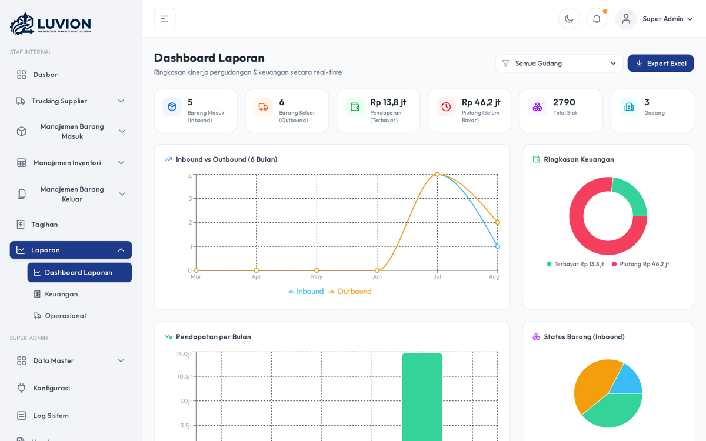
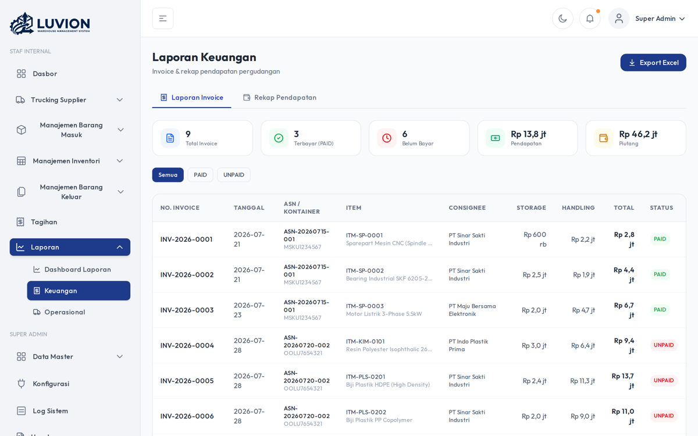
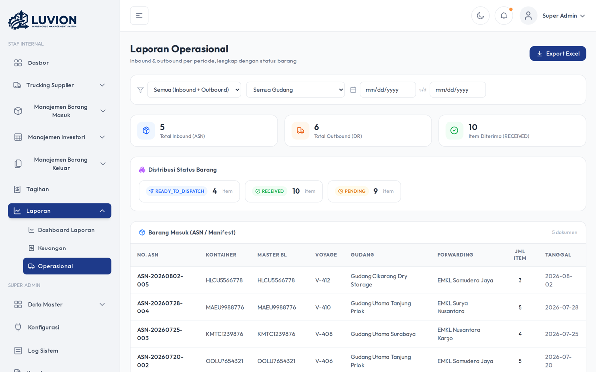

WMS Luvion — Warehouse Management System
Dokumentasi Presentasi Client
Link Akses: wms.luvion.my.id Demo Login:
superadmin/password
🏷️ Tentang Produk
WMS Luvion adalah sistem manajemen gudang (Warehouse Management System) berbasis web yang dirancang untuk mengelola seluruh alur operasional pergudangan — dari barang masuk, stok, hingga barang keluar & pengiriman — dalam satu platform terintegrasi.
Dibangun dengan teknologi modern untuk keandalan dan skala: - Frontend: Next.js 16 + React 19 + TypeScript + Tailwind CSS - Backend: Laravel (PHP) + MySQL — REST API dengan autentikasi Sanctum - Keamanan: Token-based auth, log aktivitas lengkap
🖥️ Tampilan Halaman
Halaman Login

Pintu masuk aman dengan autentikasi berdasarkan peran (role-based). Sistem mendukung 4 peran: Super Admin, Warehouse Admin, Operator Field, dan Client (Forwarding).
Dashboard Utama

Ringkasan operasional gudang dalam satu layar: - 📊 Kartu metrik: Inbound (ASN), Outbound (DR), Total Stock Qty, Jumlah Warehouse - 📈 Grafik aktivitas Inbound & Outbound (6 bulan terakhir) - 🎯 Storage Occupancy — pemanfaatan kapasitas gudang (donut chart) - 📑 Total dokumen Inbound & Outbound - 🚚 Statistik armada pengiriman yang sedang beroperasi
📥 Modul Barang Masuk (Inbound)
1. Rencana Barang Masuk (ASN — Advance Shipping Notice)

Manajemen Advance Shipping Notice — daftar barang yang direncanakan masuk, dengan: - Pembuatan & pengelolaan dokumen ASN - Detail item per ASN - Simpanan per item barang
2. Penerimaan Barang (Receiving)

Proses penerimaan fisik barang di gudang dengan catatan detail per item.
3. Quality Control Masuk

Pemeriksaan kualitas item sebelum disimpan (dengan dukungan foto bukti via SFTP).
📤 Fitur Barang Keluar (Outbound)
1. Permintaan Barang Keluar (DR — Delivery Request)

Client/Porter mengajukan permintaan barang keluar dengan detail item per permintaan.
2. Pengiriman & Surat Jalan (Dispatch)

Proses dispatch barang keluar, dengan: - Daftar ready-to-dispatch — barang yang siap dikirim - Generate Surat Jalan otomatis - Manajemen metadata logistik
3. Quality Control Barang Keluar

Pemeriksaan akhir barang yang akan dikirim keluar.
📦 Manajemen Inventori

Pengelolaan stok lengkap: - Booking stok inventory barang beserta jumlah, lokasi, dan nilai - Stock Transfers — perpindahan antar lokasi - Stock Opname — perhitungan fisik stok + item opname - QR code per item untuk identifikasi cepat
🧑💼 Dashboard Admin & Data Master
Data Master — Consignee

Kelola data consignee (penerima barang) dan forwarding untuk keperluan dokumen & invoice.
Manajemen Pengguna (Users)

Kelola pengguna sistem dengan pembagian peran, status aktif, dan user logs (catatan aktivitas: login, IP, perangkat, browser).
Manajemen Warehouse

Atur data warehouse (gudang) dan lokasi penyimpanan dalam sistem.
💰 Billing / Invoice

Perhitungan & pembuatan invoice otomatis berdasarkan ASN dengan kalkulasi tarif.
🚚 Portal Tracking (Lacak Kargo)

Portal interspiring bagi client untuk melacak status pengiriman kargo secara real-time via nomor identitas — tanpa perlu login.
📊 Modul Laporan
Dashboard Laporan

Ringkasan laporan operasional: KPI + grafik inbound/outbound + status invoice.
Laporan Keuangan

Rekap pendapatan per consignee/warehouse/bulan dengan export Excel.
Laporan Operasional

Inbound/outbound per periode + status barang, export Excel.
✨ Ringkasan Fitur Unggulan
| Modul | Fitur Utama |
|---|---|
| Dashboard | KPI real-time, grafik aktivitas, okupasi gudang, statistik armada |
| Inbound | ASN, Receiving, QC + foto, deviasi |
| Outbound | Delivery Request, Dispatch + Surat Jalan otomatis, QC |
| Inventori | Stok, transfer antar lokasi, stock opname, QR code |
| Master Data | Warehouse, lokasi, consignee, forwarding, tarif |
| Admin | Manajemen user & peran, log aktivitas, konfigurasi |
| Billing | Kalkulasi & pembuatan invoice otomatis |
| Tracking | Portal lacak publik real-time |
| Keamanan | Token auth (Sanctum), audit log per-user, foto bukti via SFTP |
🔐 Login / Akun Demo
| Peran | Username | Password |
|---|---|---|
| Super Admin | superadmin |
password |
| Warehouse Admin | whadmin |
password |
| Operator | operator |
password |
| EMKL Surya Nusantara | emkl01 |
password |
📊 Data Demo (Realistis)
Database telah diisi data dummy yang realistis sesuai kondisi lapangan pergudangan:
| Modul | Jumlah | Detail |
|---|---|---|
| Warehouses | 3 | Tanjung Priok, Surabaya, Cikarang |
| Lokasi | 37 | Zona A (racking), Zona B (floor), Zona C (khusus) |
| Forwarding (EMKL) | 3 | Surya Nusantara, Samudera Jaya, Nusantara Kargo |
| Consignees | 6 | PT Sinar Sakti, Maju Bersama, dll |
| Tarif | 3 | Standar Import, LCL, Domestik |
| ASN (Barang Masuk) | 5 | 3 selesai received, 1 in-transit, 1 dijadwalkan |
| ASN Items | 23 | Sparepart, resin kimia, plastik, elektronik, tekstil, makanan |
| Receiving | 3 | Dengan foto stripping & deviasi |
| Stock | 14 | Dengan lot number & lokasi penyimpanan |
| Stock Opname | 2 | Hasil hitung fisik dengan selisih |
| Delivery Request | 5 | 3 dispatched, 2 pending |
| Dispatch (Surat Jalan) | 3 | Dengan ekspedisi & nomor manifest |
| Invoice | 8 | 3 PAID, 5 UNPAID |
Contoh alur lengkap: Kontainer MSKU1234567 berisi sparepart mesin → ASN → receiving → stock di Zona A → permintaan keluar → surat jalan JNE → invoice.
📊 Ringkasan Teknis
| Komponen | Teknologi |
|---|---|
| Frontend | Next.js 16, React 19, TypeScript, Tailwind |
| Backend | Laravel, REST API, Sanctum Auth |
| Basis Data | MySQL |
| Storage Foto | SFTP server |
| QR Code | Per item (identifikasi cepat) |
| Tracking | Endpoint publik tracking/cargo |
Dokumentasi disusun untuk kebutuhan persentasi client. Semua screenshot diambil secara live dari aplikasi berjalan di wms.luvion.my.id.